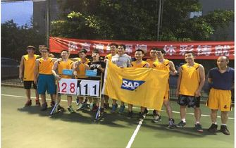
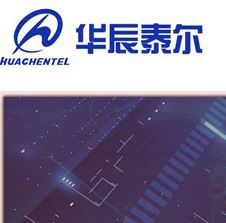
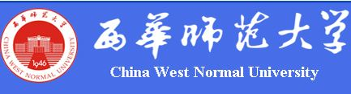

发布时间：2016-11-11 15:43:43 发布者：对外合作与科研科
亲爱的同学们，SAP成都新的一年实习生招聘现在开始啦！ 关于SAP成都 作为顶级老牌软件供应商布局中国的重要组成，SAP成都至今已经在蓉低调耕耘十年有余，现在主要由Cloud Service Center (CSC) China和Customer Engagement and Commerce (CEC) Development两大部门构成。 CSC作为亚太区云服务中心，主要负责SAP旗下C4C，BYD，Success Factors等云产品的定制开发及核心开发。 CEC产品线成都研发团队，截止2015年底已经发展成为继德国之后SAP CEC在全球范围内第一大研发团队，分别支持SAP S/4 HANA, SAP CRM FLORI等产品的核心开发业务。 我们希望你是 · 包括但不限于：计算机软件、应用、及相关专业的同学 · 本科生或研究生，能保证一周五天，至少半年(2017初始）的工作时间 · 你需要有基本的IT思维：程序逻辑，数据结构，算法，面向对向等。 以及至少一门编程语言 · 你需要有基本的语言沟通能力，中文以及至少流利的英语 · 你需要有基本的个人素质以及良好的团队合作精神
More发布时间：2016-12-08 21:43:29 发布者：学生科-研究生辅导员
山东华辰泰尔信息科技股份有限公司校园招聘简章 我公司成立于1998年，主要从事通信传输设备、网络接入设备、集成电路的研发、生产、销售以及相关计算机软件的开发。自公司成立以来，就先后被山东省科学技术厅、信息产业厅认定为“省级高新技术企业”和 “双软”企业；同时，凭借着专注、先进的技术实力，已被中国三大运营商（中国联通、中国移动、中国电信）列为一类供应设备厂商；并且在不断开拓及稳固国内市场的基础上，积极开拓了海外市场，产品已成功销往了中南亚、欧洲、北美等。 我公司坚持在客户需求的基础上，追求本领域技术的可靠性和先进性，通过不断地自主研发产品和针对高端客户的销售，为员工搭建了一个真正施展才华的平台，形成了一支稳定地有着先进技术的硬件、软件开发的技术队伍和有着卓越营销理念的销售团队。通过为员工创建宽阔的成长和良好地学习空间，让员工在公司愉快地生活，愉快地工作，充分发挥个人价值，获得相应的报酬，公司不仅提供的是员工实现物质报酬的平台，提供的更是一种事业平台。随着公司的不断发展，我们希望更多优秀的人才加盟，携手共进，共创美好明天。 职位及要求： 一、软件开发/嵌入式软件开发，需求人数：10人；（设有两个研发方向，一个是上层网管软件开发，另一个是嵌入式软件开发，可以根据自己的兴趣选择软件开发方向） 要求：1、计算机类、物联网、通信类、电子类、数学类等理工类专业研究生学历，优秀者学历条件可放宽； 2、对软件开发具有浓厚的兴趣，具有较强的学习能力和钻研能力； 3、对C、C++、JAVA任一语言能有简单了解，有编程经验者优先考虑； 4、身体健康，为人诚实，做事踏实，有良好的团队合作意识。 二、FPGA开发工程师/硬件开发 ，需求人数：5人； 要求：1、通信类、电子类、自动化类等相关专业本科及以上学历； 2、具有良好的专业理论知识和对硬件研发具有浓厚的兴趣； 3、具有较强的学习能力和钻研能力； 4、身体健康，为人诚实，做事踏实，有良好的团队合作意识。
More发布时间：2016-12-08 21:45:42 发布者：学生科-研究生辅导员
贵州智诚科技有限公司招聘简章 贵州智诚科技有限公司成立于2013年，是一家从事信息化、智能化系统设计、集成及运营维护等方面的高科技公司。公司注册资本2000万元，年销售额在六千万以上。公司业务主要是智能交通、智能安防、智能建筑、智慧教育、互联网、大数据等领域的系统整体解决方案提供、系统集成和后期运营维护。 公司主要从事与交通工程、安防工程、物联网络、智能建筑、智能及光纤弱电网络、智慧城市、电子商务及互联网相关的勘察设计及咨询服务，工程专业承包，设备安装调试，后运营，软硬件产品开发及销售、大数据挖掘与分析等服务。目前我公司与华为、海康威视、宇视、华三、曙光、IBM等国内外知名企业合作，共同致力于贵州信息化建设。目前公司是曙光信息产业股份有限公司在贵州地区的总代理，深圳华为技术有限公司的金牌代理。
More发布时间：2016-12-08 21:46:33 发布者：学生科-研究生辅导员
西华师范大学创建于1946年，是四川省人民政府举办的全日制重点师范大学，坐落在历史文化名城——南充。学校现有北湖校区和华凤校区两个校区，校园占地面积2600余亩，是四川省园林式学校，被誉为“读书的好地方、选才的好去处”。学校现有69个本科专业，16个一级硕士授权学科，7个专业硕士授权类别，6个学科联合培养博士研究生；拥有教育部重点实验室，省哲社研究基地等研究平台；先后汇聚了一批特聘中国工程院院士、国家“万人计划”、国家有突出贡献的中青年专家、省级学术技术带头人等优秀人才。七十年来，学校为四川乃至西部地区经济和社会发展作出了重要贡献。 西华师范大学计算机学院现有计算机应用技术、软件工程、农业推广（农业信息化方向）、教育硕士（职业技术教育）等4个硕士授权点，有计算机科学与技术、网络工程、物联网工程、通信工程、软件工程等五个本科专业，一个四川省优秀教学团队。计算机科学与技术专业，2001年被列为四川省本科人才培养基地，2008年被评为四川省特色专业。 一、招聘对象及名额 对象：具有博士研究生学历、学位的人员（研究方向为：计算机科学与技术、软件工程、信息与通信工程、网络空间安全等一级学科涵盖的专业领域）。 名额：4名 二、优惠待遇 （一）国家重点学科毕业且以独立或第一作者发表我校规定的C级及以上学术论文4篇（其中至少有一篇我校规定的A级学术论文）及以上的博士研究生，受聘到学校教学、科研专职岗位工作的，享受安家费15万元人民币、住房补贴15万元人民币、科研启动费10万元人民币，共计40万元人民币。应届博士以读博期间的科研成果为准，往届博士以近五年的科研成果为准。 （二）海外获得博士学位者，受聘到学校教学、科研专职岗位工作的，享受安家费15万元人民币、住房补贴15万元人民币、科研启动费10万元人民币，共计40万元人民币。
More